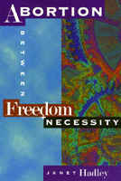

<body bgcolor="#FFFFFF" text="#000000" link="#0000FF" vlink="#CC0000" alink="#CC0000"><center><hr width="350" size="1" align="center" noshade>This new paperback contains an epilogue that discusses changes and events that occurred since 1996<hr width="350" size="1" align="center" noshade><p><a href="https://cdcshoppingcart.uchicago.edu/Cart/ChicagoBook.aspx?ISBN=9781566395069&&PRESS=temple" target="_top">Buy this book!</a> | <a href="https://cdcshoppingcart.uchicago.edu/Cart/Cart.aspx?PRESS=temple" target="_top">View Cart</a> | <a href="https://cdcshoppingcart.uchicago.edu/Cart/Cart.aspx?PRESS=temple" target="_top">Check Out</a></p><p></p></center><!--none//--><h1>Abortion</h1>
<H2>Between Freedom and Necessity</H2>
<h3>Janet Hadley</h3>
<P>cloth 1-56639-506-2 $71.50, Nov 96, <FONT COLOR=#990033>Out of Print</FONT>
<br>paper 1-56639-591-7 $25.95, Sep 97, <FONT COLOR=#990033>Out of Print</FONT>
<BR> 256 pp
6x9
2&nbsp;figures
<BR>&nbsp;<br>Restricted: Not for sale outside the U.S., its dependencies, and the Philippines
</P><BLOCKQUOTE><I>"Abortion is still not talked about. Few women admit to having one. It is too personal, it is still taboo. Often, I have been asked, 'What's your book about?' and have had to take a deep breath, not knowing what the reaction would be. Yet this intimate personal issue has become sensationally and bewilderingly public, it has even brought down governments&#151a paradox which I found intriguing enough to start me on the project of this book."</I>
<BR>&#151<B>Janet Hadley</B>, from the Introduction<I></I></BLOCKQUOTE>
<p>A quarter of the world's population lives in countries where abortions are completely or almost completely prohibited. And as many as 500 women lose their lives every day as a result of unsafe abortions.
<p>Only recently has this most intimate and private decision been so publicly debated. The principle and practice of abortion has become increasingly controversial, bringing thousands of people on to the streets, dividing nations, and convulsing the politics of many countries.
<p>Janet Hadley, in this fascinating and meticulously argued book, considers abortion politics with an international perspective and explores some of the new issues affecting the abortion controversy, such as the abortion pill and prenatal testing for birth defects. She challenges many of the arguments offered by the pro-life and pro-choice advocates, arguing for a renewed feminist commitment to abortion as a fundamental element of sexual freedom.
<BR>&nbsp;<h2>Reviews</h2>
<p><I>"British journalist and feminist Hadley has composed a stunningly comprehensive work that argues that abortion should be legal, accessible, affordable and accepted the world over.... [Her] numerous arguments make sense and are presented in a style that is brisk and flowing, one that turns the many statistics and laws she cites into an easy, enlightening read."</I> <BR>&#151<b><i>Publishers Weekly</i></b>
<p><I>"[A] thoughtful survey of abortion politics worldwide. . . . Hadley takes us through this moral maze without ever wavering in her political clarity."</I>
<br>&#151<b><i>New Statesman</i></b>
<p><I>"This extraordinary, gripping, forthright book could well have been subtitled 'Nearly all you might need or want to know about the abortion rights controversy in the U.S. and around the world.' ...If you have time to read only one new book this year on abortion rights, this is the one."</I>
<br>&#151<b><i>Voice of Reason, The Newsletter of Americans for Religious Liberty</i></b>
<p><I>"The author demonstrates that while the right to abortion is indeed about a women's right to control her body and her life, it is also a matter of reproductive health. Women should not have to die because they have sex."</I>
<br>&#151<b><I>Choice</I></b>
<p><i>"...well-written and informative. Janet Hadley presents a decidedly feminist view in her writings. However, all issues are discussed fully and fairly with much attention to validity and accuracy. This book is a wonderful resource for those who work in the field of women's health and women's rights."</i>
<br>&#151<b><i>Family and Community Health</i></b>
<BR>&nbsp;<h2>Contents</h2><P>
<p>Acknowledgments
<br>Introduction
<br>1. The United States: Back to the Crusades
<br>2. Ireland and Germany: Constitutional Brutality and Legal Twilight
<br>3. The Specter of the Backstreets
<br>4. The Fetus Factor: Ethics and Arguments
<br>5. From Mortal Combat to Feminist Morality
<br>6. A Woman's Right to Refuse: India, China and Britain
<br>7. New Controversies: The Abortion Pill, Genetics and HIV/AIDS
<br>8. Contrasting Scenes: Russia, Holland and Britain
<br>9. Weapons of War: Sieges and Strategies
<br>10. The Pitfalls of the Law
<br>11. Reclaiming a Feminist Issue
<br>Notes
<br>Glossary
<br>If You Think You Are Pregnant...
<br>References
<br>Index
</P><BR>&nbsp;<H2>About the Author(s)</H2>
<P><B>Janet Hadley</B> became involved in feminist politics at the age of nineteen in 1969 and has actively campaigned for women's reproductive rights in Britain and in the Third World. As a journalist and writer she has written extensively about health and social policies.</P>
<BR><H2>Subject Categories</H2>
<p><A HREF="/tempress/women.html" TARGET="_top">Women's Studies</a>
</p>
<p align="center"><a href="https://cdcshoppingcart.uchicago.edu/Cart/ChicagoBook.aspx?ISBN=9781566395069&&PRESS=temple" target="_top">Buy this book!</a> | <a href="https://cdcshoppingcart.uchicago.edu/Cart/Cart.aspx?PRESS=temple" target="_top">View Cart</a> | <a href="https://cdcshoppingcart.uchicago.edu/Cart/Cart.aspx?PRESS=temple" target="_top">Check Out</a></p><p><font face="Arial" size="1"><a href="copyright.html" onMouseOver="window.status='Web Copyright Policy';return true;" onMouseOut="window.status=''" title="Web Copyright Policy">&copy;</a> 2015 <a href="http://www.temple.edu" target="new" onMouseOver="window.status='Link to Temple University home page';return true;" onMouseOut="window.status=''" title="Link to Temple University home page">Temple University</a>. All Rights Reserved. http://www.temple.edu/tempress/titles/1325_reg.html</font></p>